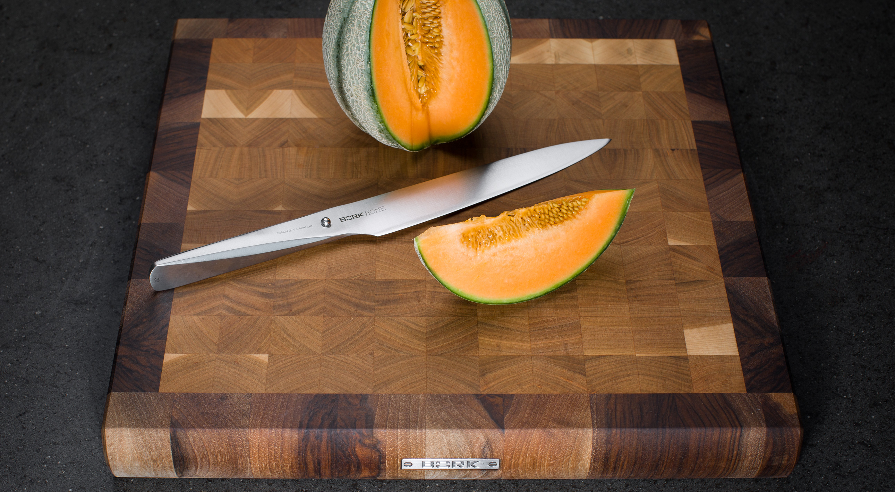
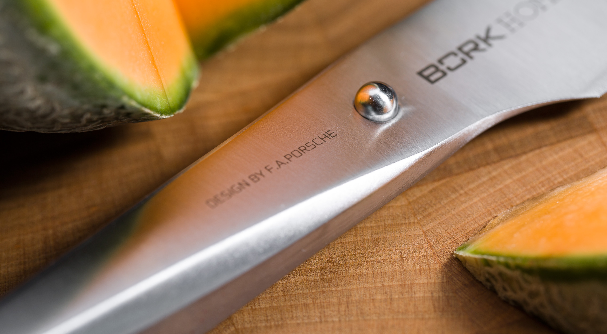

Нож для нарезки BORK HN503
Нож для нарезки – предназначен для:
- разделки сырой рыбы
- овощей и фруктов
- нарезки тонких ломтиков
Он имеет длинное лезвие с нешироким полотном и ровной, без зубчиков, режущей кромкой. Длинное лезвие нужно для получения ровного, аккуратного разреза, который совершают одним движением ножа.
Небольшая ширина полотна позволяет избегать сминания и прилипания продукта к лезвию.
Нож для нарезки длиной 19 см. создан без единого шва для гарантии гигиеничного и максимально комфортного использования.
Благодаря специальному способу затачивания изделие дольше остается острым.
Нож для нарезки BORK HN503 полностью изготовлен из японской высококачественной нержавеющей стали AISI 301.
Дизайн ножа выполнен студией Porsche Design.
Серия ножей была разработана вместе с топ-шеф- поварами из разных стран. Дизайн ножа основан на методах работы профессиональных поваров, которые часто используют свои ножи под разными углами резки.
Ручка и лезвие полностью сливаются друг с другом, образуя единое целое. Только шарик из нержавеющей стали сигнализирует о разделении, а также является упором для указательного и большого пальцев.
Необычный дизайн в сочетании с продуманной эргономикой делает ножи BORK уникальным дополнением вашей кухни и признанным инструментом более чем 200 шеф-поваров Германии.